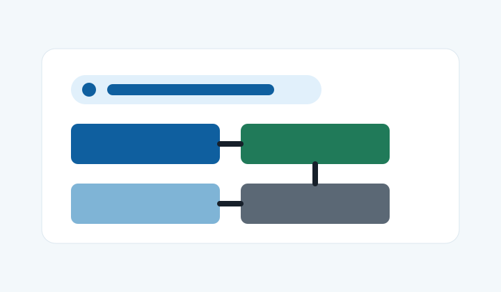
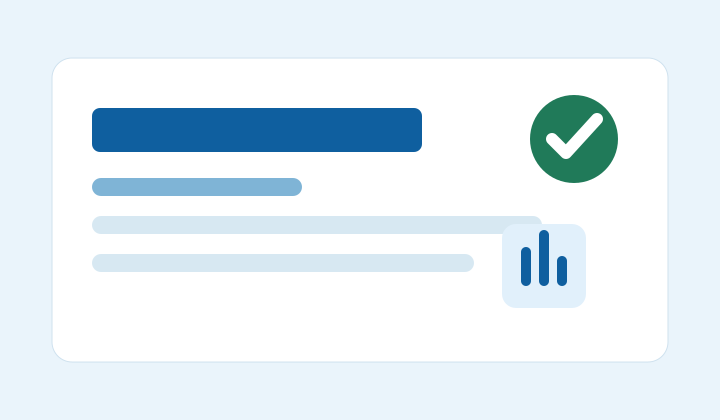
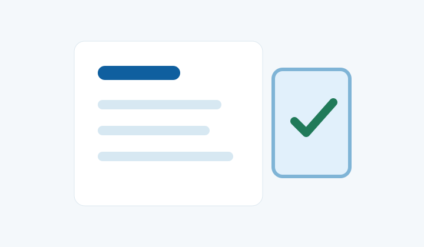
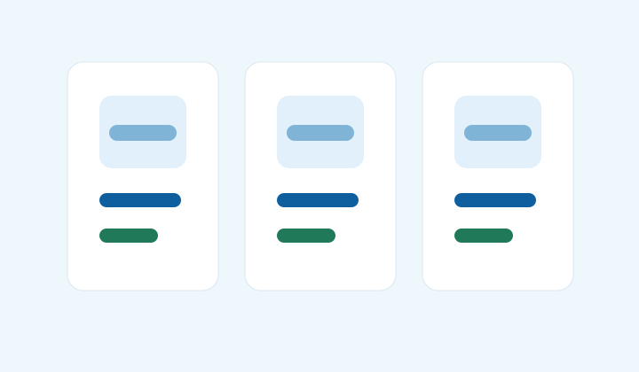
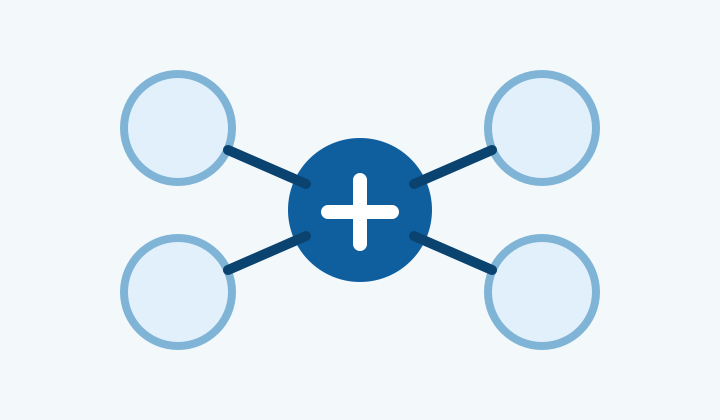
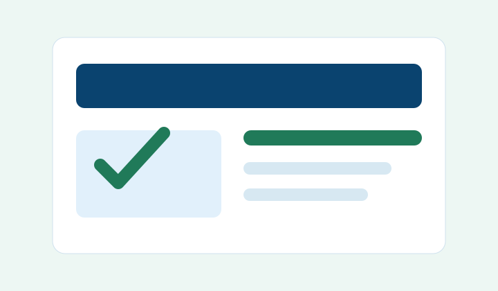
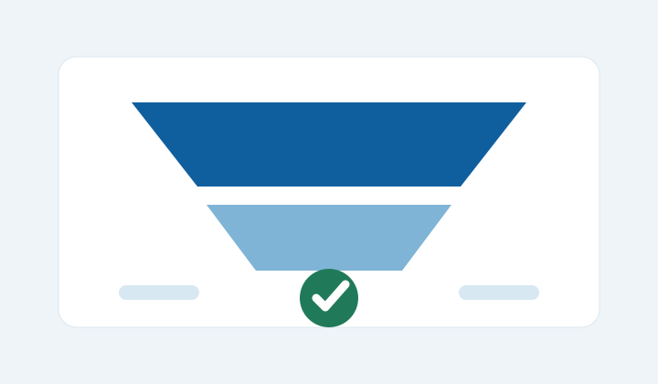
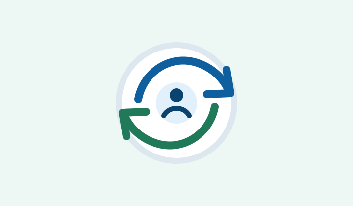
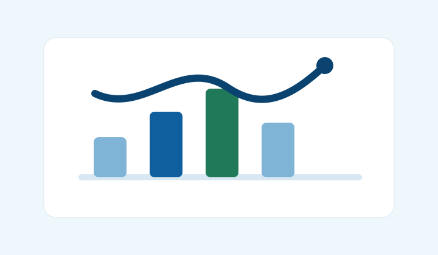

Search搜索广告
适合高意向询盘、B2B 采购、服务咨询和品牌词防守，重点管理关键词、匹配方式、否定词和搜索词质量。
Google Ads
面向外贸企业、工厂、跨境电商及其他有明确获客需求的项目，提供 Google Ads 投放管理、开户流程指导、落地页检查、转化追踪和数据复盘。广告账户由客户真实主体创建、持有并管理。

搜索、展示、视频、购物、Performance Max、需求开发和应用推广对应不同的投放任务。先明确要获得询盘、订单还是应用内行为，再结合目标市场、素材与追踪条件选择组合，不必同时启用所有类型。具体可用功能以账户和地区为准。

Search适合高意向询盘、B2B 采购、服务咨询和品牌词防守，重点管理关键词、匹配方式、否定词和搜索词质量。

Display适合品牌曝光、再触达和内容分发，重点检查素材表达、受众范围、展示位置和无效流量排除。
适合产品演示、品牌认知和内容推广，按视频格式调整开场、时长和行动引导，并检查观看目标与落地页承接。

Shopping适合电商商品推广，重点检查 Merchant Center 商品 Feed、价格、库存、运输退换和页面一致性。

PMax适合有稳定转化数据和素材资产的项目，重点规划资产组、受众信号、转化目标和搜索词洞察复盘。
了解 PMax 的适用条件
Demand Gen适合新品触达、内容推广和潜在用户培育，重点匹配图片视频资产、受众兴趣和后续转化路径。

App适合 App 安装和应用内转化目标，重点确认事件回传、应用商店页面、素材规格和地区预算。

Remarketing在符合条件的系列中，再次触达与业务有过互动的用户。需要先核对数据来源、隐私披露、适用的用户同意要求及平台资格，不能把所有访客都视为可投放名单。
查看再营销基础指南
Brand承接已有品牌搜索需求，将品牌词与非品牌词分开评估，检查预算、搜索词和转化成本。购买品牌词广告不代表锁定搜索位置，也不会直接提升自然排名。
自有数据受众的使用方式与适用系列，可参照 Google 的数据细分受众群说明；具体功能和政策要求以平台为准。
按国家、产品线、意图强弱和预算阶段拆分广告系列，避免数据混在一起导致复盘失真。
建立核心词、长尾词、竞品词和否定词清单，定期清理不相关搜索词，减少浪费点击。
了解匹配方式与否定范围检查标题、描述、附加信息、图片、视频和行动按钮是否和落地页内容一致。
区分表单提交、电话咨询、有效线索与成交；聊天按钮点击或页面浏览不直接等同于有效询盘。按可验证的业务结果选择优化目标。
检查企业主体、产品说明、隐私政策、服务条款和联系渠道，提升页面可信度。
按转化成本、线索质量、询盘地区和设备表现复盘，给出下一阶段预算调整建议。
“开户”和“代投”不应混成一个模糊套餐。合作前先确定账户处于哪个阶段、需要谁执行哪些工作，再书面确认交付物、周期、权限和费用。以下是范围确认清单，不是固定报价或所有项目默认包含的服务。
| 合作需求 | 需要确认的工作 | 交付与边界 |
|---|---|---|
| 首次开户协助 | 梳理真实主体资料、账单设置、验证步骤和首次投放准备。 | 确认资料清单与设置检查记录；客户自行提交身份及付款资料，平台决定验证和审核结果。 |
| 持续谷歌代投 | 约定系列结构、关键词、素材、追踪、预算调整及搜索词复盘的执行范围。 | 确认变更记录、报表口径和复盘频率；超出预算、目标或服务范围的调整先协商。 |
| 现有账户专项检查 | 确定要排查的是无展示、无转化、线索质量还是追踪数据异常。 | 确认问题清单、证据与建议；诊断不默认包含后续代投、网站开发或持续修复。 |
广告消耗与服务费分开列明，另外确认追踪实施、落地页开发、素材制作、税费或第三方工具是否另计。不要仅凭点击量判断交付效果，先约定什么算一次有效咨询。可结合谷歌广告费用与预算计算评估。
先检查原账户的权限、账单、验证和历史数据，再判断需要哪些工作。账户存在限制时应按平台要求核查和处理，不能用新账户或借用主体来替代合规整改。已有账户通常可从检查和优化需求谈起，不默认重建。
不需要。初次沟通只提供公开网站和业务需求，不发送密码、验证码、银行卡信息或客户个人资料。实际协作使用平台邀请与访问权限机制，按任务授权并保留客户自身管理权；具体权限可核对 Google 的账号访问权限说明。
上线取决于资料、验证、追踪、素材及广告审核状态；产生有效咨询还受需求、竞价、预算、页面和跟进能力影响。先确认准备工作与测试计划，不承诺一小时上线、固定询盘数量或固定排名。
签约前约定账户权限撤回、广告暂停或保留、预算控制、素材及报表交付、追踪配置说明和服务结算方式。账户和业务数据由客户掌握，不通过代持或扣留账户维持合作。
首次开通 Google Ads 时，需要根据实际业务填写主体资料、选择账单国家/地区与时区、设置付款方式并完成平台要求的验证。我们可以协助梳理资料清单、讲解设置步骤和检查广告投放准备；账户注册、身份验证、付款资料及最终控制权始终归客户本人或其企业。
开户指导不等于出售或提供现成账户，也不代表 Google 官方服务。平台审核由 Google 独立决定，我们不提供绕过审核、借用身份或保证开户通过的服务。可先阅读 谷歌广告开户流程与投放入门。
Google Ads 搜索广告的位置由每次竞价中的广告评级等因素决定，可能随搜索情境变化；不能保证固定排名、始终首页展示或“稳居第一”。自然搜索排名则由 Google 搜索系统根据多种信号自动评估，与购买广告展示不是一回事。
因此，谷歌广告代投的工作重点是账户结构、搜索意图、广告质量、落地页和转化数据的持续改进，而不是承诺排名。可查看 Google 的广告竞价说明与搜索引擎优化入门指南。
提供公开网站、业务类型、目标地区与语言、预算范围和是否已有账户，先确认需要开户指导、持续代投还是专项检查。无需提供密码、验证码或客户个人资料。